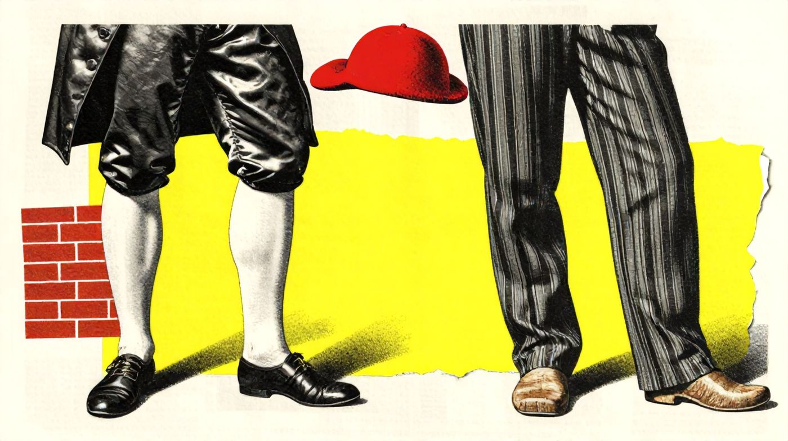
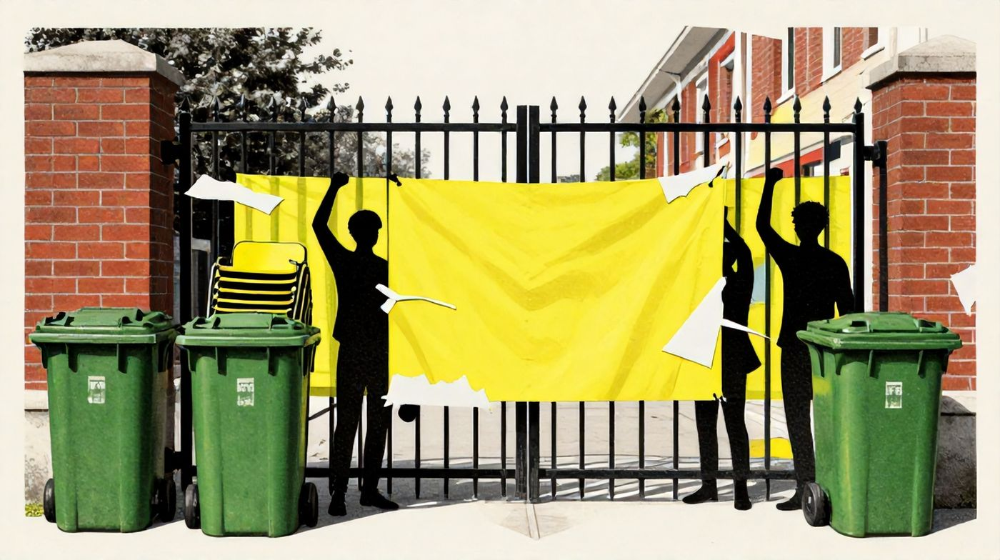
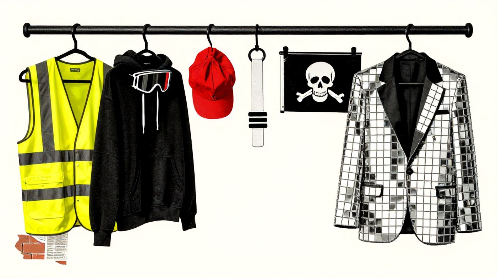
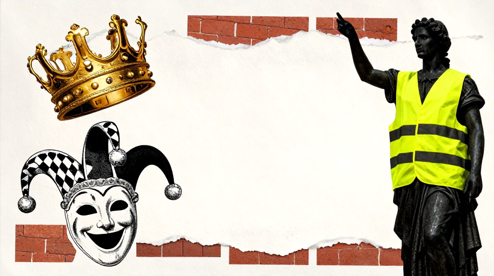
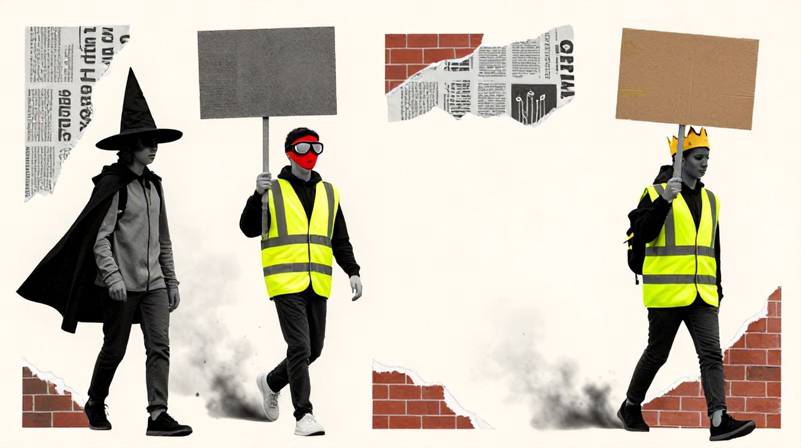
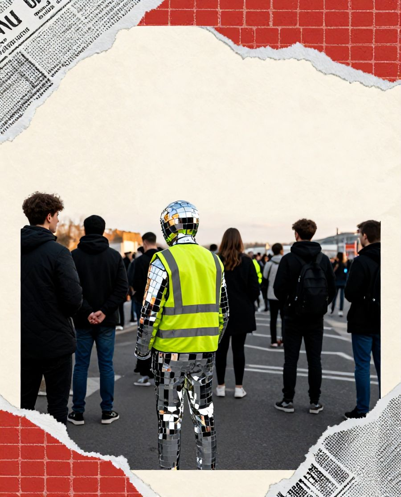
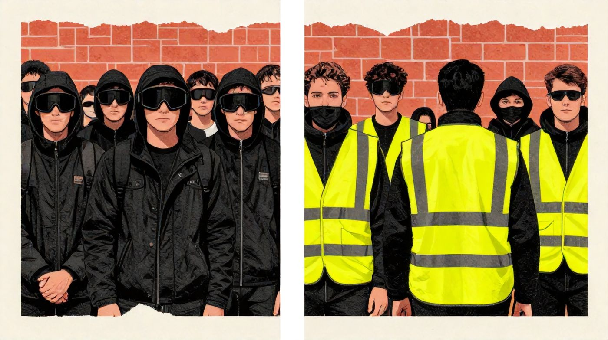
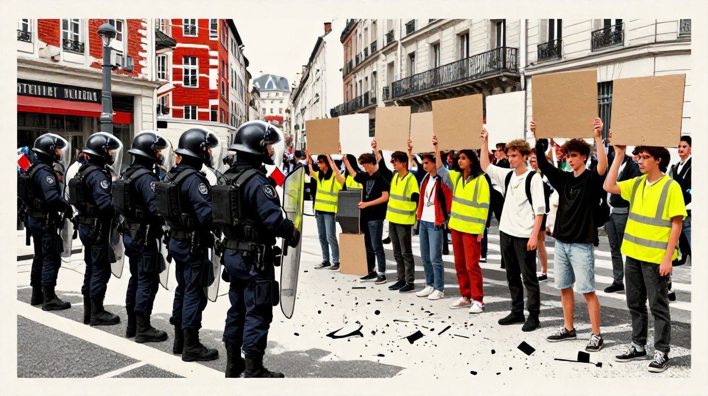
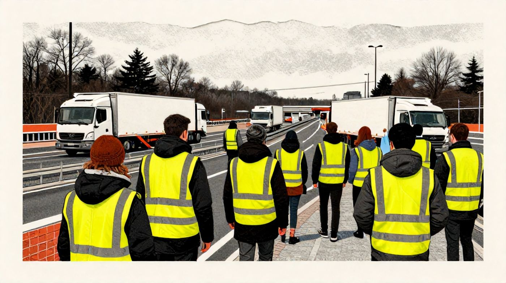
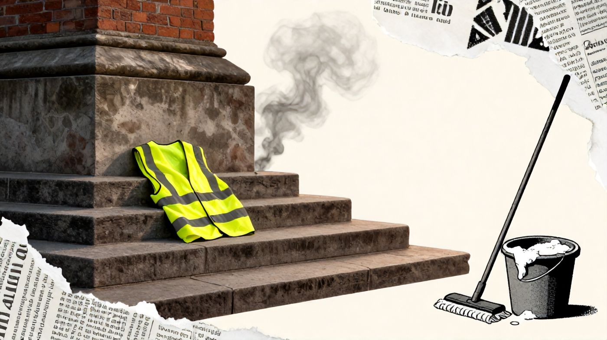

انقلاب فرانسه را کسانی پیش بردند که نامشان را از لباسی گرفتند که نداشتند. «سانکولوت»ها؛ پیشهوران و مزدبگیران پاریس که آن شلوار تا زانوی ابریشمی را، که نشان اشراف بود، نمیپوشیدند و شلوار بلند کتانی به پا داشتند (Soboul, 1958). با همان شلوار بلند کوچههای انقلاب را از آنِ خود کردند. از آن روز در فرانسه لباس هیچگاه فقط لباس نبوده است.

دویست و سی و هفت سال بعد، شنبهی گذشته، کسی از پایهی مجسمهی ماریان در میدان جمهوری پاریس بالا رفت و جلیقهای زرد بر شانههایش انداخت. ماریان صد و چهل و سه سال است همانجا ایستاده، شاخهی زیتون در دست، با همان ردای مفرغی که لئوپولد موریس در ۱۸۸۳ بر تنش کرد۱. پایینتر، بر صورت سه خواهرش، آزادی و برابری و برادری، اشک سیاه کشیده بودند۲. گمان ندارم آنکه بالا رفت سانکولوتها را به یاد داشت. اما تاریخ گاهی بیاجازهی آدمها تکرار میشود.
آن روز به روایت وزارت کشور ۵۵۰ هزار نفر به خیابان آمدند و به روایت برگزارکنندگان ۸۰۰ هزار نفر۳. عددها را زود از یاد میبریم؛ هر کس به سود خودش میشماردشان. آنچه از این شنبه بر جا میماند لباس است. لباسهایی که هر کدام از جایی آمده بودند، یکی از قانون راهنمایی و رانندگی، یکی از کارتونی ژاپنی، یکی از کتاب تاریخ، و حالا در یک میدان کنار هم ایستاده بودند.
در یک نگاه
اول بچهها آمدند
این بار نه اتحادیهها شروع کردند، نه حزبها، نه جلیقهزردهای کهنهکار. از نیمهی سپتامبر دبیرستانهای حومهی شمالی پاریس یکییکی بسته شد؛ همان محلههای کارگرنشینی که پاریسِ کارتپستالها نامی از آنها نمیبرد. حرف بچهها ساده بود: کلاسی که معلم ندارد و سقفی که چکه میکند. حرف ساده اما دیری نپایید که بزرگ شد و به نابرابری رسید، به گرانی، به خدمات عمومی که هر سال لاغرتر میشد۴.

۶ اکتبر معلمها آمدند، پدرها و مادرها آمدند، اتحادیهها آمدند۵. ۱۷ اکتبر نوبت جلیقهزردها بود؛ بازماندگان جنبشی که هشت سال پیش دولت اول ماکرون را به لرزه انداخت۶. و خیابان شد صندوقخانهای که هر نسل چیزی در آن آویخته بود.
گاهشمار یک ماه
- نیمهی سپتامبربستهشدن دبیرستانهای حومهی شمالی پاریس در اعتراض به کمبود معلم و ساختمانهای فرسوده۴
- ۱ اکتبردانشجویان میپیوندند؛ حدود ۳۰ دانشگاه، از سوربن تا رن، محاصره میشود۵
- ۶ اکتبرسومین روز سراسری؛ معلمان، والدین و اتحادیهها، از جمله ثژت، به خیابان میآیند۵
- ۱۷ اکتبرجلیقهزردها میپیوندند؛ ۵۵۰ تا ۸۰۰ هزار نفر در سراسر فرانسه، ۱٬۲۰۰ بازداشت۳۱۴
کمد لباس یک شهر
جلیقهی زرد را اول قانون به تن فرانسویها کرد، نه سیاست. از ۲۰۰۸ هر راننده باید یکی در خودرو داشته باشد تا اگر کنار جاده ماند، دیده شود۷. ده سال بعد همین جلیقه بر تن کسانی رفت که میگفتند سالهاست کنار جاده ماندهاند و کسی نمیبیندشان. جلیقهای برای دیدهشدن، که حالا بر تن ماریان بود.

چند قدم آنطرفتر، سیاهی. جوانانی با کلاه و ماسک و عینک، که هر بار پلیس گاز اشکآور شلیک میکرد و عقب مینشست، از میان دود پیش میآمدند۴. عینک برای گاز است. ماسک اما همیشه فقط برای گاز نیست.
و بالای سرها پرچمی که پدرها و مادرها نمیشناختندش: جمجمهای خندان با کلاه حصیری، نشان دزدان دریایی انیمهی «وانپیس». این پرچم پیش از پاریس از جاکارتا و کاتماندو و مانیل گذشته بود و هر جا مقامها آن را تهدیدی برای وحدت ملی خواندند، بیآنکه بخواهند بادش را تندتر کردند۸. نسلی که در خیابان همدیگر را نمیشناسد، با یک کارتون همدیگر را پیدا کرده است.
Ils veulent 1984, ils auront 1789
آنها ۱۹۸۴ میخواهند، ۱۷۸۹ تحویل میگیرند.پلاکاردی در میدان جمهوری، ۱۷ اکتبر۳
پلاکاردی که حرف یک نسل را در هفت کلمه گفته بود. اورول در یک کفه، سانکولوتها در کفهی دیگر.
و مادرها. با بازوبند سفید آمده بودند، بعد از آنکه بیش از ۶٬۷۰۰ کودک از آغاز جنبش بازداشت شده بودند۹۶. خودشان را به زبان کوچه daronnes مینامیدند، چیزی شبیه «ننهها»ی خودمان، و بر پلاکاردشان نوشته بودند به جوانی شعلهور فرزندانشان میبالند۱۰. دانشجویان هنر اسب تروایی ساخته بودند و دانشآموزان مونپلیه قلعهای مقوایی چندمتری۳۱۱. هومر و سانکولوتها و یک مانگای ژاپنی، شانهبهشانه، در یک بعدازظهر پاییزی. شهر انگار صندوقخانهاش را به کوچه ریخته بود.
لباس، زبان آنکه صدایش نمیرسد
میخائیل باختین این صحنهها را ندید، اما گمان دارم بهتر از هر کسی توضیحشان داده است. او در «رابله و جهان او» از کارناوال میگوید؛ روزهایی که در اروپای قرون وسطا مراتب رسمی وارونه میشد، گدا تاج بر سر میگذاشت و خنده سلاحی میشد علیه جدیت قدرت (Bakhtin, 1965/1984). جلیقهی زرد بر تن ماریان همان وارونگی است.
جمهوری، لباس معترضان خودش را پوشیده است.

دانشآموزی که با لباس فانتزی به تظاهرات میآید، بیآنکه بداند، در سنتی قدم میزند که پژوهشگران جنبشهای اجتماعی «سبکسری تاکتیکی» مینامندش؛ شوخی بهجای سنگ، نمایش بهجای سپر (Shepard, 2011). حکومتها دوست دارند معترض را «اغتشاشگر» بنامند. از اغتشاشگری که لباس پاندا پوشیده اما عکس ترسناک نمیشود گرفت. استادی در مونترال همین را فهمیده بود که در اعتراضات دانشجویی ۲۰۱۲ با لباس پاندا جلوی صف میایستاد تا تنش بخوابد۱۲.

اما چرا وانپیس کنار ۱۷۸۹؟ دیک هبدیج، جامعهشناس بریتانیایی، چهل و چند سال پیش برای پانکها واژهای وام گرفت: بریکولاژ؛ برداشتن اشیای آشنا و نشاندنشان در معنایی تازه، چنانکه سنجاققفلی از قنداق بچه به گوش پانک رسید (Hebdige, 1979). نسلی که با میم بزرگ شده، تاریخ را هم مثل میم به کار میبرد. باستیل و کلاه حصیری برایش از یک جنساند؛ نشانههایی برای گفتن یک «نه»ی بلند.
و چرا این پرچم چنین تند سفر میکند؟ لنس بنت و الکساندرا سگربرگ پاسخش را دادهاند. جنبشهای امروز با حزب و مانیفست به هم وصل نمیشوند؛ با نمادهایی وصل میشوند که هر کس معنای خودش را در آن میریزد. نامش را گذاشتهاند «کنش پیوندی» (Bennett & Segerberg, 2012). چارلز تیلی از «رپرتوار» اعتراض میگفت، از شیوههایی که هر ملت برای اعتراض بلد است (Tilly, 2008). رپرتوار امروز دیگر در کتاب تاریخ هیچ ملتی نیست. در گوشیهاست.
بازی از پارک بیرون زد
واژهی «کاسپلی» را یک روزنامهنگار ژاپنی ساخت. نوبویوکی تاکاهاشی در ۱۹۸۳ از همایش علمیتخیلی آمریکاییها گزارش مینوشت، دید فرنگیها به هیئت قهرمانان فیلمها درآمدهاند و «کاستوم» را به «پلی» دوخت (Crawford & Hancock, 2019, p. 7). چهل و سه سال بعد، تلویزیون فرانسه از دبیرستانیهای مونپلیه گزارش میدهد و همان رمزگان را میبیند: «لباسهای عجیبوغریب»، پلاکاردهای شوخ و چیزی که بچهها «نبرد اورا» مینامندش؛ رسمی از شبکههای اجتماعی که حالا به خیابان آمده است۱۱.

کتابی که این بخش بر آن تکیه دارد. گری کراوفورد، جامعهشناس، و دیوید هنکاک، هنرمند، سالها با جماعت کاسپلیرهای منچستر نشستوبرخاست کردند و حاصل را در «کاسپلی و هنر بازی» نوشتند؛ پژوهشی میان جامعهشناسی فراغت و هنر، که بحث اصلیاش این است که لباسپوشی و بازی، فضای شهری را چگونه از نو معنا میکند.
این دو نویسنده پاسخی دارند که اول بار ناامیدکننده مینماید. به گمان آنان، و به نقل از ناپیر و لنگ، کاسپلی کمتر سیاسی است؛ گریزگاهی است از روزمرگی، نه سنگری در برابر آن (Crawford & Hancock, 2019, p. 112). از قول بینبریج و نوریس میآورند که کاسپلی «مختلکننده» هست اما «براندازنده» نیست (p. 143). کاسپلیرهای منچستر اول در پارکی شلوغ نزدیک مرکز شهر جمع میشدند. پلیس آمد و گفت مزاحم مردمید، و آنها رفتند به پارکی کوچک و پرت، کنار محلهای که مدارا بیشتر داشت (pp. 222–224). نویسندگان مینویسند این جماعت نه اهل رویارویی که در پی «جای امن» است و گاه برای نگاهداشتن همان جای امن دست به دامن پلیس میشود (p. 224).
حالا پاریس را ببینید. دبیرستانی پانزدهساله همان لباس فانتزی را پوشیده و همان شوخی تیکتاکی را بلد است، اما بهجای پارکی پرت آمده است به میدان جمهوری، به میان گاز اشکآور. همان کتاب راه فهمش را هم نشان میدهد. نویسندگان میپذیرند که هجو میتواند ابزار براندازنده و سیاسیِ نیرومندی باشد، چون اغراق در امر بدیهی آن را زیر پرسش میبرد (p. 144). و از میشل دوسرتو، فیلسوف فرانسوی، وام میگیرند که آدمهای بیقدرت در دل «راهبرد»های قدرت با «تاکتیک» زندگی میکنند: با تغییر قیافه، با فریب، با بلوف (de Certeau, 1984, به نقل از Crawford & Hancock, 2019, p. 202).
مرز میان بازی و اعتراض، به زبان این کتاب، مرز میان «جای امن» و «فضای عمومی» است. کاسپلیر منچستر از پارک شلوغ عقب نشست؛ دبیرستانی پاریسی پیش آمد. و این شهر، شهری است که گی دبور و موقعیتگرایانش در دههی پنجاه میلادی در آن «پرسه»ی بینقشه را بازیای برای بازپسگرفتن خیابان میدانستند (pp. 204–205). گمان دارم دبور اگر بود، از دیدن پسرکی با شنل کارتونی در دود گاز اشکآور تعجب نمیکرد.
حکایت دو لباس
در این خیابان دو لباس با هم حرف نمیزنند. جلیقهی زرد فریاد میزند: مرا ببین. سیاهپوش زمزمه میکند: مرا نبین. یکی میخواهد از حاشیه به متن بیاید؛ دیگری میخواهد در جمعیت گم شود. فرانسیس دوپوییدری، پژوهشگر کانادایی، بلک بلاک را سازمان نمیداند؛ تاکتیکی میداند که ناشناسی را هم سپر میکند و هم پیام (Dupuis-Déri, 2013). اما پشت هر نقابی کسی هست. کراوفورد و هنکاک از قول امون میآورند که کاسپلیر شخصیت را میپوشد و باز خودش آنجاست، پشت نقاب؛ به استعاره، و اغلب به معنای واقعی کلمه (Crawford & Hancock, 2019, p. 136).

مرا ببینمرا نبین
دولت هم درست بر همین مرز انگشت گذاشته است. فرانسه از ۲۰۰۹ میتوانست معترض نقابدار را جریمه کند و در روزهای جلیقهزردها زندان را هم بر آن افزود۱۳. قانون آوریل ۲۰۱۹ پوشاندن عمدی صورت در تظاهرات را جرم کیفری کرد (Loi n° 2019-290). شنبهی گذشته ۱٬۲۰۰ نفر بازداشت شدند و ماکرون از «بذرپاشان آشوب» گفت و وعدهی مجازات داد۱۴. دویست و سی و هفت سال، آری دویست و سی و هفت سال پس از سانکولوتها، در جمهوریای که بر سردرش آزادی نوشته، صورتِ پوشیده هنوز جرم است.
میان این دو، بازوبند سفید مادرها راه سومی است. دیدهشدن، اما نه برای اعتراض؛ برای پناه دادن. مادری که بازوبند میبندد به پلیس نمیگوید «مرا ببین». میگوید:
این بچه صاحب دارد.
جلیقه را درمیآورند
جلیقهزردهای ۲۰۱۸ یک لباس داشتند و یک رنگ. خیابان ۲۰۲۶ کلاژ است: زرد و سیاه و سفید، جمجمهی کارتونی و اسب چوبی و سال ۱۷۸۹. هیچ لباسی بر دیگری نمیچربد. این چندصدایی هم قوت این جنبش است و هم پاشنهی آشیلش. ائتلافی میسازد که از دبیرستانی پانزدهساله تا بازنشستهی هفتادساله را در یک میدان جمع میکند، اما گمان ندارم به آسانی بتواند همه را پشت یک مطالبه نگه دارد.


دیر یا زود مأموران شهرداری از پایهی مجسمه بالا میروند و جلیقه را از تن ماریان درمیآورند. اشک سیاه را هم از صورت خواهرانش میشویند. پرسشی که آن شنبه بر شانههایش گذاشتند اما با آب و صابون پاک نمیشود: جمهوریای که لباس معترضانش را میپوشد، صدایشان را هم میشنود؟ سعدی هفت قرن پیش گفته بود:
تن آدمی شریف است به جان آدمیتنه همین لباس زیباست نشان آدمیتسعدی، غزلیات